|
|

|
223 Physics Lab: Ohm's Law & Kirchhoff's Rules
|
223 & 224 Lab Overview |
Return to Physics 223 Labs
Purpose
The purpose of this lab experiment is to investigate Ohm's Law and Kirchhoff's
rules using resistors in dc circuits connected in series and parallel.
Background
When a constant potential difference,
,
is applied to a conducting material, a current density,
,
is established that is directly proportional to the electric field,
,
created within the material.
The constant of proportionality is known as the electrical conductivity,
and the relation is known as Ohm's Law
The electric field created by the potential difference, establishes a current,
,
in the conductor which is directly proportional to the potential difference.
By considering the resistance of a given length of material,
a more useful and familiar form of Ohm's Law may be derived from Equation 1,
namely
where the constant of proportionality,
 ,
is the resistance of the conductor. Not all materials obey this relation, but those
that do, for example most metals, are known as ohmic materials. We
see from this relationship that the unit of resistance, ohm, is defined as ,
is the resistance of the conductor. Not all materials obey this relation, but those
that do, for example most metals, are known as ohmic materials. We
see from this relationship that the unit of resistance, ohm, is defined as
| Resistors in Series and Parallel |
In this lab we will use Equation 2 and various resistors to obtain a clear
understanding of direct current (dc) circuits. You should be aware that resistors
connected in series, as shown in Figure 1, have an
equivalent resistance,
,
as follows
| |
|
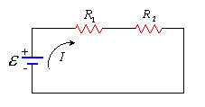
|
|
Figure 1. For resistors in series, the current through each
resistor is identical. If the resistances and current are both known,
the voltage drop across each resistor may be determined from Equation 2.
|
Note that the voltage source, for example a battery or constant voltage
power supply, supplies an emf,
,
to the circuit which creates a current flowing in the loop. The current
flowing through
must be identical to the current through
. The potential difference across each resistor,
therefore, can be determined using Equation 2.
Conversely, the resistors in Figure 2 are connected in parallel and
the equivalent resistance for this configuration is given by
Again, the supplied emf creates a current flowing in the circuit, but this time
it is the voltage drop across each resistor that is identical, not the current.
The current through each branch of the circuit may then be determined using
Equation 2.
| |
|
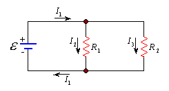
|
|
Figure 2. For resistors in parallel, the voltage drop across each
resistor is identical. If the resistances and voltage are known,
the current through each resistor may be determined from Equation 2.
|
When analyzing more complicated dc circuits, it is helpful to use two easily stated
principles known as Kirchhoff's rules. They may be stated as follows:
- The sum of the currents entering a junction must equal the sum of the currents
exiting that junction. This can be seen in Figure 3 and is given
by the following formula:
| |
|
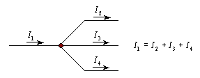
|
|
Figure 3. When the current encounters a junction, sum of the
currents entering the junction must equal the sum of the currents
exiting the junction.
|
- The sum of the potential differences across each circuit element in a
closed loop must be zero.
The rules for determining the sign of the voltage
drop (+ or -) are depicted graphically in Figure 4. You man also wish to
consult your text for tips on applying Kirchhoff's rules to dc circuits.
| |
|
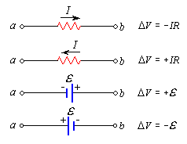
|
|
Figure 4. Rules for determining the sign (+ or -) of
the potential drops across circuit elements.
Each of the above paths are traversed from left to right.
|
Objectives
- Use the resistor color codes to determine the resistance values of your
three resistors,
,
, and
.
- Wire your breadboard according to the circuit diagram below, replacing
the resistor,
,
with,
.
Make use of the computer program
entitled "Voltage Probe", the ammeter and the power supply, and make a
graph to determine the resistance of
. Repeat for
and
.
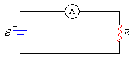
- Setup and perform an experiment to determine if the light bulb is an
ohmic device. Do not allow the current to go above 200mA during
this Objective!
- Wire your breadboard according to the diagram below. Use the voltage probe
and ammeter to measure the voltage drops
,
,
and
, and the currents
and
.
How do these relate to Kirchhoff's rules?
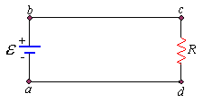
- Setup your breadboard with your resistors in series with the ammeter and
power supply as shown below. Measure the currents in the circuit and the
voltage drops across each circuit element, and show that Kirchhoff's
voltage rule (i.e., Equation 7) applies to this circuit.
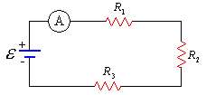
- Refer to the above figure, from Objective 5, for this Objective and if your
circuit is not wired accordingly, do so now. Use Equation 2, namely
,
and make a graph to determine the equivalent resistance of the circuit,
. Note is it not necessary to adjust
the circuit once it is properly wired.
- Setup your breadboard with your resistors in parallel with the each other
as shown below. Measure the currents in each branch the circuit and the
voltage drops across each circuit element, and show that both of
Kirchhoff's rules (i.e., Equations 6 and 7) applies to this circuit.
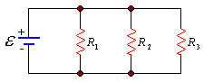
- Insert the ammeter into the circuit diagram used for Objective 7. The
new diagram is shown below. Use Equation 2, namely
,
and make a graph to determine the equivalent resistance of the circuit,
. Note is it not necessary to adjust
the circuit once it is properly wired.
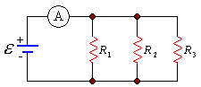
Equipment and setup
- (Figure 5.) The electronics breadboard. Notice the
binding posts can be used to easily bring power from the power supply
(Figure 7). You may find tutorials on using the breadboard in
the On-line Assistance section.
- (Figure 6.) A sample of three resistors.
- (Figure 7.) The power supply unit. In this lab we will use
direct (not alternating) current. See the note in the
Hints and Cautions section on how to produce
a constant voltage from the supply.
- (Figure 8.) The analog ammeter. Choose your scale carefully
so as not to blow-out the meter. Again see the
Hints and Cautions section.
- (Figure 9.) The voltage probe for use with the LabPro
computer interface. These probes are designed to read voltages
between -10V and +10V. Keep voltages with in this range!
- (Figure 10.) Screen shot from the "Voltage Probe" Logger Pro
program
- (Figure 11.) Jumper wires for use with the breadboard
(Figure 5). Use the pliers (Figure 12) to insert these wires into
the breadboard.
- (Figure 12.) Pliers should be used to insert resistors
and jumper wires into the breadboard.
- (Figure 13.) The light bulb may be connected to the
circuit using a combination of jumper wires, alligator clips
and banana wires.
- (Figure 14.) The digital multi-meter (DMM) is used for
reading resistance values.
- Alligator clips
- Banana wires
|
[Click on images to enlarge.]
|
Hints and Cautions
- Caution!!! Use caution when handling "live wires". All electrical
circuits should be handled carefully!
- Caution!!! When using the voltage probes from the computer,
always keep the voltage between ±10V!
- Caution!!! To protect the ammeter (or any voltage or current meter),
use the large scale first and then gradually move to a more sensitive
scale.
Starting with the sensitive scale first may cause the meter to be "pegged"
and could seriously damage the unit.
- Caution!!! Always monitor the current into the ammeter and
do not allow the current to exceed the ammeter's scale!
- In this lab, use only the power supply's dc voltage outputs, not
the ac voltage outputs!
- The power supply needs to be set to constant voltage mode. To do so,
turn the DC CURRENT ADJUST knob fully clockwise, then adjust the DC
VOLTAGE ADJUST knob to obtain the desired output voltage.
- When connecting the power supply to the breadboard, use the binding
posts on the breadboard.
- You should not use the voltmeter and ammeter displays on the power supply
to record the circuit voltages and currents. Instead, use the voltage
probe from the computer and the analog ammeter.
- The ammeter should always be connected in series with
the circuit elements.
- The voltmeter, or voltage probes, should always be connected
parallel to the circuit elements.
- You should always use the lab's pliers to insert your wires and circuit
elements into your breadboard.
- You may wish to make use of "pig-tails" to help you read voltages and
currents from the circuit when attached to the breadboard.
- If there was ever a laboratory experiment in which you should
"Think before you act", this one is it! Take your time and
carefully plan out how you will solve each Objective.
Online Assistance
- Resistor color codes explained
- Resistor color code calculator -- very cool
- Another color code calculator
- How to use a breadboard
- Another breadboard tutorial
- Some common circuit symbols
- Some more symbols
- Adding a non-linear
trendline to an Excel plot
- Clemson Physics Lab Tutorials
Lab Report Template
Each lab group should
download the Lab Report Template
and fill in the relevant information
as you perform the experiment. Each person in the group
should print-out the Questions section and answer them individually.
Since each lab group will turn in an electronic copy of the lab report,
be sure to rename the lab report template file. The naming convention is as
follows:
[Table Number][Short Experiment Name].doc.
For example the group at lab
table #5 working on the Ideal Gas Law experiment would rename their template file
as "5 Gas Law.doc".
Nudge Questions
These Nudge Questions are to
be answered by your group and checked by your TA as you do the lab. They
should be answered in your lab notebook.
General Nudges
- How can you determine if the potential difference across each component
is positive or negative?
Objective 1 Nudges
- What is the uncertainty of your resistance values as taken from the
color code?
- How do your values using the color code compare to those as read by a
digital multimeter (DMM)?
Objective 2 Nudges
- How will you determine the value of your resistors?
- What scale are you using on the ammeter?
- How will you measure the voltage in the circuit?
Objective 3 Nudges
- What will your circuit diagram look like?
- What quantities will you plot?
- What should the graph of an ohmic device look like?
- Must the light bulb filament be glowing before you take data for this
Objective?
Objective 4 Nudges
- What are the resistances along each path,
,
and
.
Here, we assume that the power supply has no internal resistance.
- What is the current through the resistor,
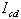 ?
- Calculate the theoretical values for the measured values. How do they
compare?
Objective 5 Nudges
- What does Kirchhoff's voltage rule state?
- Does this circuit represent a closed loop?
- What is the voltage drop across each component?
- How do the voltage drops across each component compare to each other?
Objective 6 Nudges
- What would the circuit look like if you replaced the resistors in
series with
?
- What quantities will you plot on your graph?
- What information will the slope provide?
- Across which two points is the potential difference taken?
- Theoretically, what value should
have?
- How does your experimental result compare to the theoretical one?
Objective 7 Nudges
- Wiring the circuit for this Objective can be quite time consuming. Can
you think of a clever way to setup your circuit to make it easier
to measure the current flowing into each branch?
- When moving the ammeter from one branch to another, should you
adjust the power supply voltage? Why or why not?
- What does Kirchhoff's voltage and current rules state?
- What is the voltage drop across each component?
- How do the voltage drops across each component compare to each other?
- How does the current through each branch compare?
Objective 8 Nudges
- What would the circuit look like if you replaced the resistors in
series with
?
- What quantities will you plot on your graph?
- What information will the slope provide?
- Across which two points is the potential difference taken?
- Theoretically, what value should
have?
- How does your experimental result compare to the theoretical one?
Questions
These Questions are also found in the lab write-up template. They must be answered by
each individual of the group. This is not a team activity. Each person should
attach their own copy to the lab report just prior to handing in the lab to your
TA.
- Which of the following circuits may be used to determine the value of the
resistor? Circle all that apply.
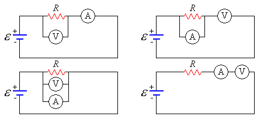
- Knowing that the ammeter must be connected in series with the circuit and
the voltmeter must be connected in parallel, what does this tells you
about the internal resistance of each device?
- Some strands of Christmas tree lights are wired in series. What happens to the
other lights if one of the bulbs is removed? Other lights are wired
in parallel. What happens when one of these bulbs is removed?
- Small household electrical devices, such as vacuum cleaners, televisions and
floor lamps, each draw a different amount of current, but all require 120
volts to operate. Are the outlets in of a power-strip, then, wired in
series or parallel? Why?
- The wiring diagram for a household floor lamp with three bulbs is shown below.
What are the values of the currents through each bulb, given
?
Assume that the light bulbs are identical.
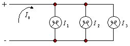
- What are the values of the currents,
,
,
and
,
if the third light bulb in the above question burns out.
(When a bulb "burns out", its filament breaks and that path becomes open.)
Again assume all bulbs are identical.
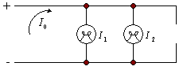
TA Notes
- Do not mistake Equation 2 for Ohm's Law. This is equation is simply
the equation for resistance.
- Leave the resistors and light bulbs at the TA's desk and have students
"check them out" as they need them. Make sure we get these components
back after each lab.
Data, Results and Graphs
Answers to Questions
CUPOL Experiments
As of now, there are no
CUPOL experiments
associated with this experiment.
If you have a question or comment, send an e-mail to Lab Coordiantor:
Jerry Hester
223 & 224 Lab Overview |
Return to Physics 223 Labs
|
|